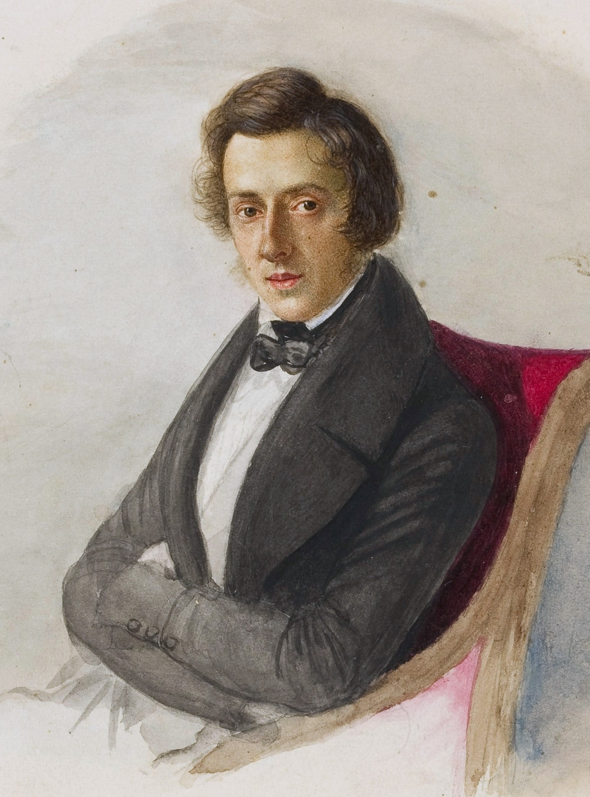
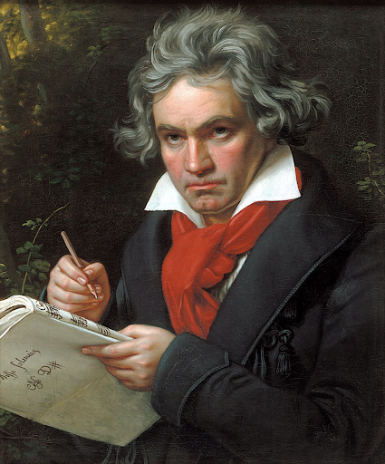

古典時期的作曲家及鋼琴家。莫札特是位非常多作品的作曲家，其一生就創作了六百多部作品，作品也被廣泛視為古典音樂的典型，對後世有極大的影響。

古典時期的作曲家及鋼琴家。莫札特是位非常多作品的作曲家，其一生就創作了六百多部作品，作品也被廣泛視為古典音樂的典型，對後世有極大的影響。
波蘭作曲家和鋼琴家，他是歷史上最具影響力和最受歡迎的鋼琴作曲家之一，波蘭音樂史上最重要的人物之一，也是歐洲19世紀浪漫主義音樂的代表人物。
貝多芬上承古典樂派傳統，下啟浪漫樂派之風格與精神，因而在音樂史上占有非常重要的地位，他是歷史上最具影響力和最受歡迎的古典音樂作曲家之一。
